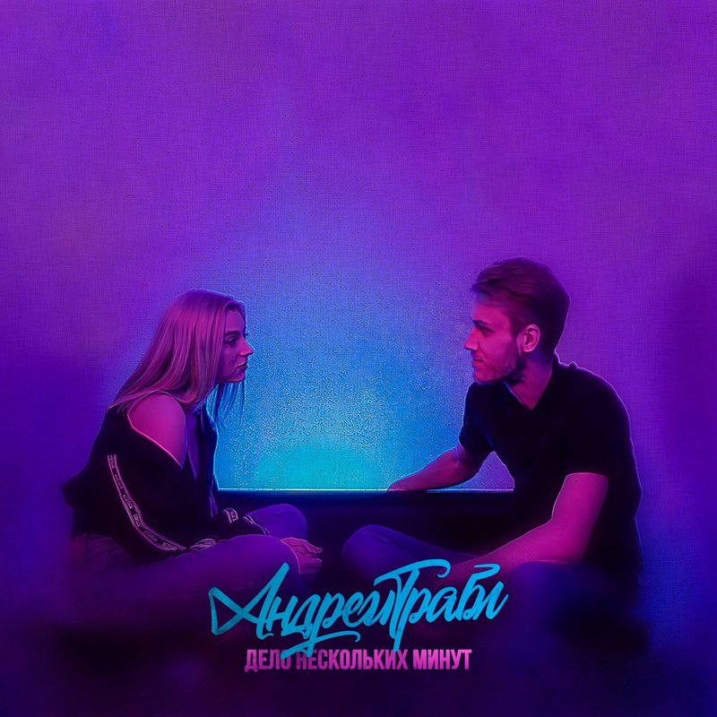

Андрей Трабл
Дело нескольких минут
Съёмка, монтаж: Виктор Тим
Текст: Андрей Трабл
Музыка: FILЁV
Запись: Canterville
Сведение, мастеринг: Андрей Трабл
Клип, обложка: Виктор Тим
– Может, поговорим? – О чём? – Считаешь, со мной не о чем поговорить? – Нет – я считаю это хуёвой затеей. – Пойдём хотя бы покурим? – Есть зажигалка? – Угу. - Дверь закрой. – Послушай, я – автор, и всё, что могу - это буйство и пьянство, которым сопутствует бл*дство. – Талант не пропьёшь. – Но я знаю, что нужно в себя принимать, чтобы мир поменялся. – Я как-то пробовала что-то. – Не, не порть себя. Я бы положил тебя под себя, как два пальца. – Ахахах... – Спроси у них. Вон, сидят, хотя, ты самая забавная поклонница, которая могла мне попасться. – Но ты же внушаешь им... – Вызов на вибро такой оглушающий. Глянь, я душою подох, а ты живенько клюнула. Что? – Хочу, чтобы ты стал товарищем. – Не, возможно, от меня уже некоторые беременны, и стрелки на чулках говорят мне о лучшем времени. Давай не будем портить настроение. Если я захочу тебя себе, то мне хватит пары минут. Не надо пытаться остаться тут, это плохо. Тебе не стоит касаться меня: я падал из окон. Но эти мысли не греют собой. Откуда берутся? Чтобы ты рядом была со мной, нужно пару минут всего. – Ты же знаешь, как сложно с талантами. – Но вы все – неизвестные авторы. – Зато вы – популярные, шлюхи, кстати, наш диалог на экваторе. – Я хотела сказать, что люблю почитать, и вокруг говорят, что ты тоже. – Давай. – Кто любил, полюбить не может, кто сгорел... – Того не трогают стихи Серёжи. Блядь! Я до тебя, видно, не донесу. Если короче: ты сегодня подошла четвёртой. Плохой поэт ли, хороший – не суть, ведь рано или поздно я стану мёртвым. Ты же видишь пейзаж, а не действительность. – Да пошёл ты! – А на что ты обиделась? Тут «Голодные горы», «Французов ручей», и ещё много писанины, что тебе не снилась. – Я вслух прочитала уже кучу книг... – Но всё ждёшь, чтобы кто-то показал тебе кино. Ты поступаешь плохо, а в планах МГИМО. Я точно иной, если ты тоже в ноль. – Налей мне ещё. – Я ничего не изменю. Ты появилась на готовое – выбери из меню. Клянусь тебе прямо сейчас, под вискарём: я хороню талант, ведь отпел своё. Не надо пытаться остаться тут, это плохо. Тебе не стоит касаться меня: я падал из окон. Но эти мысли не греют собой. Откуда берутся? Чтобы ты рядом была со мной, нужно пару минут всего.